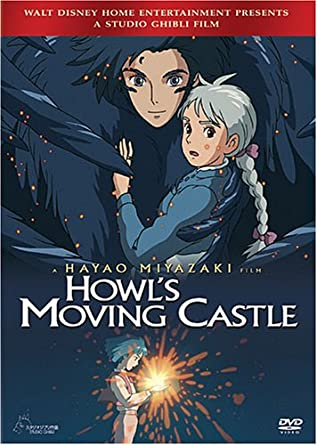
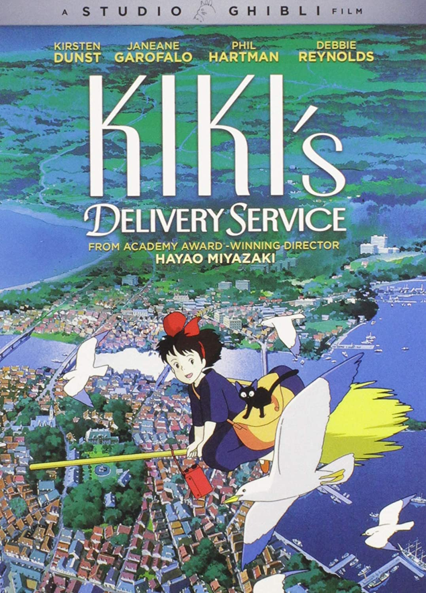
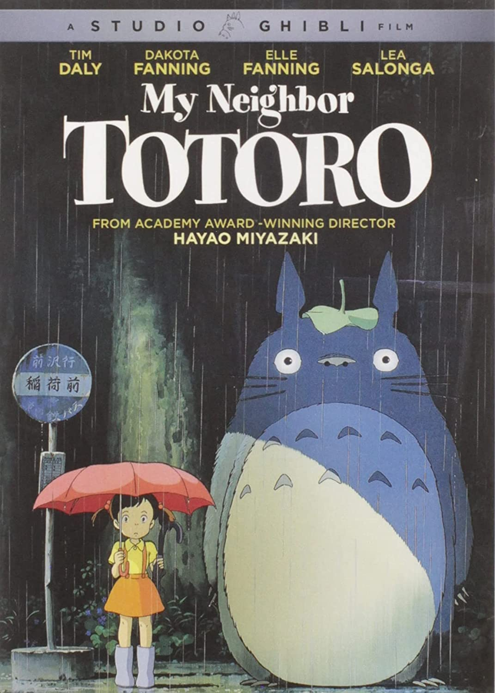

Castle In The Sky - 1986
Young orphan Sheeta and her kidnapper, Col. Muska, are flying to a military prison when their plane is attacked by a gang of air pirates led by the matronly Dola. Escaping from a mid-air collision via a magic crystal around her neck, Sheeta meets fellow orphan Pazu and the pair join forces to discover the mystical floating city of Laputa while pursued by both Muska and the pirates, who lust for the city's myriad treasures.
Howls Moving Castle - 2004
Sophie has an uneventful life at her late father's hat shop, but all that changes when she befriends wizard Howl, who lives in a magical flying castle. However, the evil Witch of Waste takes issue with their budding relationship and casts a spell on young Sophie, which ages her prematurely. Now Howl must use all his magical talents to battle the jealous hag and return Sophie to her former youth and beauty.
Kiki's Delivery Service - 1990
In this anime feature, 13-year-old Kiki moves to a seaside town with her talking cat, Jiji, to spend a year alone, in accordance with her village's tradition for witches in training. After learning to control her broomstick, Kiki sets up a flying courier service and soon becomes a fixture in the community. But when the insecure young witch begins questioning herself and loses her magic abilities, she must overcome her self-doubt to get her powers back.

- 
- 
- 


Ponyo - 2008
During a forbidden excursion to see the surface world, a goldfish princess encounters a human boy named Sosuke, who gives her the name Ponyo. Ponyo longs to become human, and as her friendship with Sosuke grows, she becomes more humanlike. Ponyo's father brings her back to their ocean kingdom, but so strong is Ponyo's wish to live on the surface that she breaks free, and in the process, spills a collection of magical elixirs that endanger Sosuke's village.
My Neighbor Totoro - 1988
This acclaimed animated tale by director Hayao Miyazaki follows schoolgirl Satsuke and her younger sister, Mei, as they settle into an old country house with their father and wait for their mother to recover from an illness in an area hospital. As the sisters explore their new home, they encounter and befriend playful spirits in their house and the nearby forest, most notably the massive cuddly creature known as Totoro.
Spirited Away - 2002
In this animated feature by noted Japanese director Hayao Miyazaki, 10-year-old Chihiro and her parents stumble upon a seemingly abandoned amusement park. After her mother and father are turned into giant pigs, Chihiro meets the mysterious Haku , who explains that the park is a resort for supernatural beings who need a break from their time spent in the earthly realm, and that she must work there to free herself and her parents.